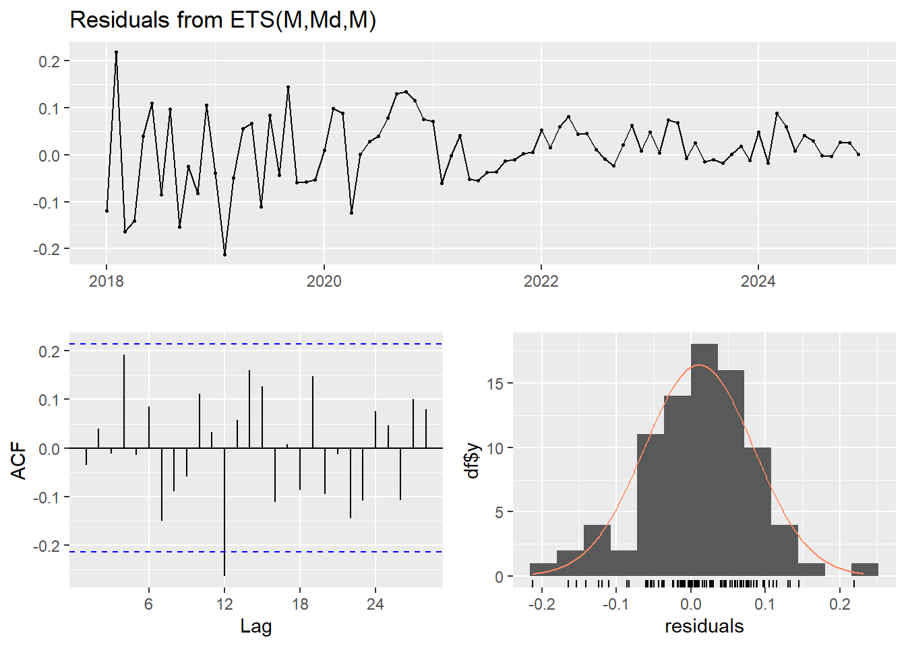
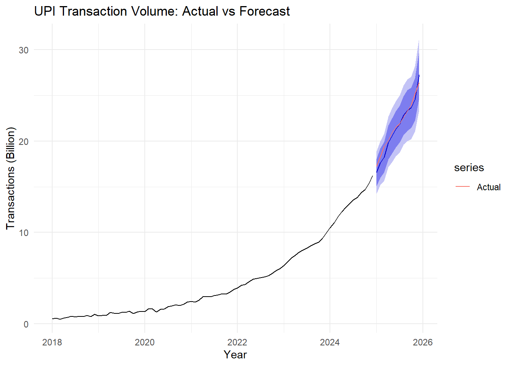
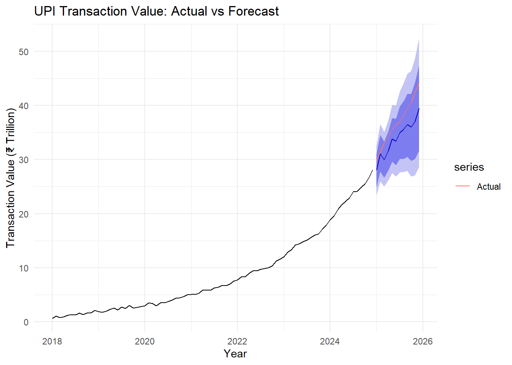

Warning: package 'tidyverse' was built under R version 4.5.2
Warning: package 'ggplot2' was built under R version 4.5.3
Warning: package 'readr' was built under R version 4.5.3
Warning: package 'dplyr' was built under R version 4.5.3
── Attaching core tidyverse packages ──────────────────────── tidyverse 2.0.0 ──
✔ dplyr 1.2.1 ✔ readr 2.2.0
✔ forcats 1.0.0 ✔ stringr 1.5.1
✔ ggplot2 4.0.3 ✔ tibble 3.3.0
✔ lubridate 1.9.4 ✔ tidyr 1.3.1
✔ purrr 1.1.0
── Conflicts ────────────────────────────────────────── tidyverse_conflicts() ──
✖ dplyr::filter() masks stats::filter()
✖ dplyr::lag() masks stats::lag()
ℹ Use the conflicted package (<http://conflicted.r-lib.org/>) to force all conflicts to become errors
library(forecast)
Warning: package 'forecast' was built under R version 4.5.3
library(tseries)
Warning: package 'tseries' was built under R version 4.5.3
Registered S3 method overwritten by 'quantmod':
method from
as.zoo.data.frame zoo
library(lubridate)library(scales)
Attaching package: 'scales'
The following object is masked from 'package:purrr':
discard
The following object is masked from 'package:readr':
col_factor
library(strucchange)
Warning: package 'strucchange' was built under R version 4.5.3
Loading required package: zoo
Warning: package 'zoo' was built under R version 4.5.3
Attaching package: 'zoo'
The following objects are masked from 'package:base':
as.Date, as.Date.numeric
Loading required package: sandwich
Warning: package 'sandwich' was built under R version 4.5.3
Attaching package: 'strucchange'
The following object is masked from 'package:stringr':
boundary
'data.frame': 96 obs. of 3 variables:
$ Date : Date, format: "2018-01-01" "2018-02-01" ...
$ Transaction_Volume_Billion : num 0.534 0.604 0.509 0.608 0.685 0.814 0.721 0.831 0.792 0.898 ...
$ Transaction_Value_INR_Trillion: num 0.677 1.097 0.804 0.914 1.229 ...
# Check dimensionsdim(upi)
[1] 96 3
# Check missing valuescolSums(is.na(upi))
Date Transaction_Volume_Billion
0 0
Transaction_Value_INR_Trillion
0
# Summarysummary(upi)
Date Transaction_Volume_Billion Transaction_Value_INR_Trillion
Min. :2018-01-01 Min. : 0.509 Min. : 0.677
1st Qu.:2019-12-24 1st Qu.: 1.341 1st Qu.: 2.962
Median :2021-12-16 Median : 3.831 Median : 7.631
Mean :2021-12-15 Mean : 6.853 Mean :12.300
3rd Qu.:2023-12-08 3rd Qu.:10.066 3rd Qu.:18.125
Max. :2025-12-01 Max. :26.425 Max. :44.288
Ljung-Box test
data: Residuals from ETS(M,M,M)
Q* = 23.149, df = 17, p-value = 0.1445
Model df: 0. Total lags used: 17
VALUE ETS
checkresiduals(value_ets)

Ljung-Box test
data: Residuals from ETS(M,Md,M)
Q* = 21.83, df = 17, p-value = 0.1914
Model df: 0. Total lags used: 17
ACCURACY OF MODELS
accuracy( fc_volume_naive, test_volume)
ME RMSE MAE MPE MAPE MASE
Training set 0.189241 0.2873837 0.2243735 3.657761 7.070966 0.1072332
Test set 5.500167 6.0940259 5.5001667 24.180158 24.180158 2.6286541
ACF1 Theil's U
Training set 0.5053723 NA
Test set 0.6932801 6.67078
accuracy( fc_volume_naive, test_volume)
ME RMSE MAE MPE MAPE MASE
Training set 0.189241 0.2873837 0.2243735 3.657761 7.070966 0.1072332
Test set 5.500167 6.0940259 5.5001667 24.180158 24.180158 2.6286541
ACF1 Theil's U
Training set 0.5053723 NA
Test set 0.6932801 6.67078
accuracy( fc_volume_snaive, test_volume)
ME RMSE MAE MPE MAPE MASE ACF1
Training set 2.092389 2.686013 2.092389 38.06641 38.06641 1.000000 0.9404025
Test set 8.450583 8.506070 8.450583 38.89980 38.89980 4.038725 0.6737638
Theil's U
Training set NA
Test set 9.614319
accuracy( fc_volume_snaive, test_volume)
ME RMSE MAE MPE MAPE MASE ACF1
Training set 2.092389 2.686013 2.092389 38.06641 38.06641 1.000000 0.9404025
Test set 8.450583 8.506070 8.450583 38.89980 38.89980 4.038725 0.6737638
Theil's U
Training set NA
Test set 9.614319
accuracy(fc_value_naive, test_value)
ME RMSE MAE MPE MAPE MASE
Training set 0.3309277 0.505550 0.4000843 3.868285 7.537351 0.1091284
Test set 8.6881667 9.648952 8.6881667 22.576454 22.576454 2.3698142
ACF1 Theil's U
Training set 0.2572899 NA
Test set 0.6995950 6.767043
accuracy(fc_value_drift, test_value)
ME RMSE MAE MPE MAPE MASE
Training set 3.918581e-16 0.3821879 0.2967168 -4.713048 7.518557 0.08093349
Test set 6.537137e+00 7.2197307 6.5371365 17.018060 17.018060 1.78309182
ACF1 Theil's U
Training set 0.2572899 NA
Test set 0.6795007 5.072514
accuracy(fc_value_snaive, test_value)
ME RMSE MAE MPE MAPE MASE ACF1
Training set 3.666181 4.488439 3.666181 38.01700 38.01700 1.000000 0.9357072
Test set 13.529000 13.614617 13.529000 36.74343 36.74343 3.690217 0.6793506
Theil's U
Training set NA
Test set 9.836659
## VOLUME autoplot(volume_ets_fc) +autolayer(test_volume, series ="Actual") +labs(title ="UPI Transaction Volume: Actual vs Forecast",x ="Year",y ="Transactions (Billion)" ) +theme_minimal()

## VALUE autoplot(value_ets_fc) +autolayer(test_value, series ="Actual") +labs(title ="UPI Transaction Value: Actual vs Forecast",x ="Year",y ="Transaction Value (₹ Trillion)" ) +theme_minimal()

++++++++++++++++++++++REFIT THE SELECTED MODEL USING HISTORICAL DATA
Based on the current dataset and the out-of-sample model comparison:
UPI transaction volume demonstrates a strong multiplicative growth pattern rather than linear growth. ETS(M,M,M) provides the most reliable forecasting performance among the tested approaches, substantially outperforming naïve, drift, linear-trend and log-linear alternatives on the 12-month holdout period.
The selected model forecasts transaction volume rising from approximately 28.1 billion transactions in January 2026 to 43.6 billion in December 2026. The company’s current capacity of 35 billion transactions per month is therefore expected to be reached around June 2026.
Management should not wait until the capacity threshold is actually exceeded. Expansion planning should begin before the forecast reaches 90–100% utilisation, with additional processing capacity targeted to be operational by approximately May 2026. The prediction intervals should be used as the final risk trigger because they quantify the possibility of exceeding capacity earlier than the point forecast.